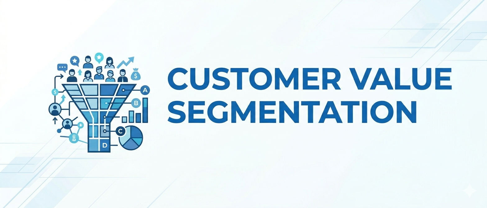
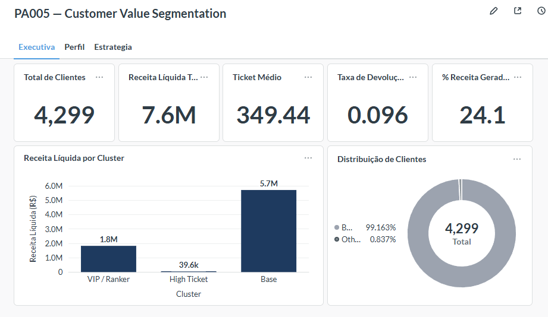
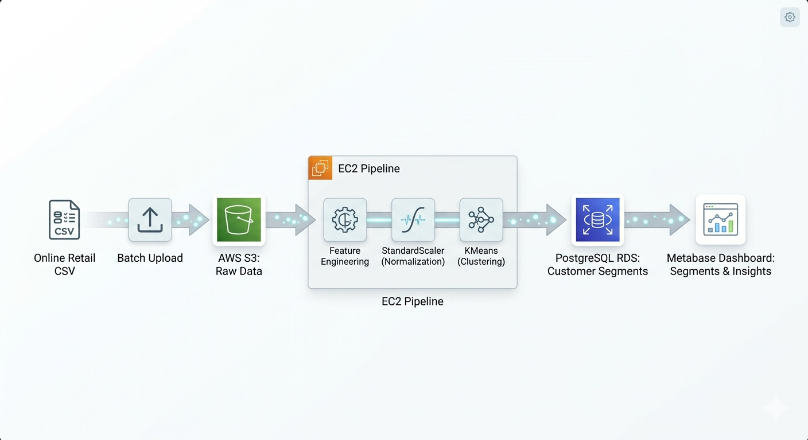

Customer Value Segmentation


Dashboard executivo no Metabase com os segmentos de clientes.
01. Visão Geral
Empresa de e-commerce sem visibilidade sobre quais clientes geravam mais valor — todos recebiam as mesmas campanhas de marketing independente do comportamento de compra. O objetivo foi segmentar a base de forma inteligente e definir ações específicas por grupo.
O pipeline cobre o ciclo completo: coleta dos dados brutos no S3, feature engineering com 17 variáveis comportamentais (recência, frequência, ticket médio, diversidade de produtos e devoluções), modelagem e deploy produtivo em cloud AWS.
02. Abordagem Técnica
Foram testados quatro algoritmos de clusterização, comparados por interpretabilidade de negócio e estabilidade entre execuções: KMeans, Gaussian Mixture Model (GMM), Hierarchical Clustering e DBSCAN.
O KMeans foi selecionado para produção pela combinação de melhor separação entre grupos, estabilidade em reexecuções e facilidade de retraining automatizado na infraestrutura EC2.
03. Resultado de Negócio
A solução identificou grupos com comportamentos distintos, permitindo ações de marketing direcionadas por segmento em vez de campanhas genéricas para toda a base.
identificados
concentrada no VIP
de churn
04. Deploy & Infraestrutura
O modelo de inferência roda em script agendado na AWS EC2, lê os dados de transações do RDS PostgreSQL, aplica o pipeline de features e grava os clusters de volta no banco. O Metabase conecta diretamente ao RDS e atualiza o dashboard automaticamente.
O pipeline de treino é separado do de inferência. O modelo serializado fica no S3 e é carregado pelo script de predição, sem necessidade de retraining a cada execução.

Arquitetura de deploy: EC2 para inferência, S3 para modelo, RDS para dados, Metabase para visualização.
05. Ver o Projeto
Código completo, documentação CRISP-DS e README detalhado disponíveis no GitHub.
Ver no GitHub ↗Leia mais projetos
.png)


👋 Entre em contato